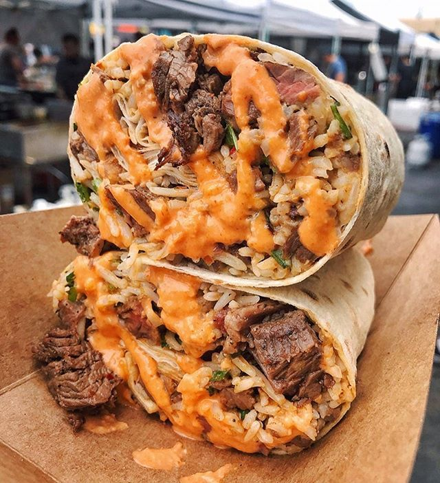

this includes instructions and an ingredient list for a burrito and grilled cheese! its hard to go wrong with these two.
Grilled Cheese

Ingredients:
- 2 slices sourdough bread
- Mayonnaise
- Dijon mustard (i dont like mustard so i recommend taking this out)
- 1 to 2 ounces grated sharp cheddar cheese, depending on the size of your bread
- 1 to 2 ounces grated Gruyère or raclette cheese, depending on the size of your bread
- Butter for the pan
- Place the bread slices on a cutting board and spread the top side with a thin layer of mayo. Flip one slice of bread and spread its other side with Dijon mustard. Layer the cheddar and Gruyère or Raclette cheeses on top of the mustard, then place the other slice of bread on top of the cheese, mayo side out.
- Heat a nonstick or cast-iron skillet over medium-low heat and melt enough butter in the bottom of the pan to coat it. Place the sandwich in the pan, cover, and cook for 2 to 3 minutes, or until the bottom slice of bread is golden brown and crisp. Flip, replace the lid, and cook until the other slice of bread is golden brown and the cheese is melted, 1 to 3 minutes. Reduce the heat to low if the bread is getting too brown before the cheese is fully melted.
- Slice and serve.
Burrito

Ingredients:
- 1 pound ground beef
- 1 medium yellow or white onion, finely chopped
- 1½ teaspoons ground cumin
- ½ teaspoon smoked paprika, or chipotle or ancho chile powder
- ½ teaspoon dried oregano
- 1 (15-ounce) can black or pinto beans
- 1 large tomato, coarsely chopped
2 teaspoons lime juice/apple cider vinegar
hot sauce (optional)
6 burrito size tortillas
2 cups shredded Monterey Jack cheese
- In a large skillet, press the beef into an even layer to fill the skillet. Sprinkle with the onion. Cook over medium-high, undisturbed, until the meat is deeply browned underneath, 6 to 8 minutes.
- Sprinkle with the cumin, smoked paprika and oregano, and season with salt and pepper. Break up the beef into small pieces, then cook, stirring occasionally, until the onion is softened and the spices are fragrant, 2 to 4 minutes.
- Add the beans, including the liquid, and the tomato and simmer, stirring and scraping up browned bits, until the liquid has evaporated and the mixture starts to sizzle, 8 to 10 minutes. Turn off the heat, stir in the lime juice and season with salt and pepper.
- Arrange the tortillas on a clean work surface. Sprinkle half the cheese across the center of the tortillas, left to right, leaving a 1-inch border. Top each with ⅔ cup of the beef-bean mixture, followed by the remaining cheese. Drizzle on hot sauce, if using.
- Fold the tortilla’s short sides over the filling, then fold the bottom of the tortilla snugly over the filling. Tightly roll away from you until the burrito is sealed. Repeat with the other tortillas.
- When ready to eat, in a nonstick skillet over medium, place the burritos seam side down. Cook, turning occasionally, until golden all over, 3 to 5 minutes. Serve with desired toppings.